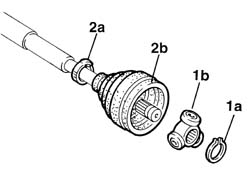

2710A24 Differential side SLIDING JOINT (one), left or right - R.R. with driveshaft removed including replacing boot
- Path
- Procedures > 27 AXLE > 2710 FRONT AXLE > 2710A DRIVESHAFTS AND JOINTS > 2710A24 Differential side SLIDING JOINT (one), left or right - R.R. with driveshaft removed including replacing boot
- Kind
- repair procedure (removal / refitting; the operation number is the code)
- Applies to
- all engines; all production periods
- Interactive page
- https://sloeber94.github.io/elrnDB-lThss/en/#/108874
Applies to: all engines; all production periods
 Removing
Removing
 Refitting
Refitting- Position the driveshaft in a vice.
1. Remove the circlip (1a) and release the three-lobe joint (1b) from the driveshaft.
2. Remove the retaining band (2a) and move the protective boot (2b) back.

Applies to: all engines; all production periods
Refitting
Removing- Check that the driveshaft is not distorted or offset in the area where the joint is fitted and that the area in contact with the seal is not worn.
- Fit the three-lobe joint on the driveshaft in the special housing securing it using the special flexible clip.
- Fill the protective boot and the bearing with grease - 70 grams in the boot and about 70 grams in the joint on the differential.
 | Description | Qty. | Component | Type | Classification |
|---|---|---|---|---|---|
. | TUTELA MRM ZERO | 140 ± 10 | DRIVESHAFT CONSTANT VELOCITY JOINTS | Grease |